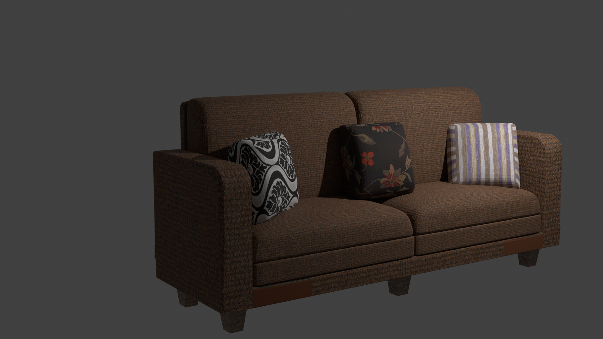
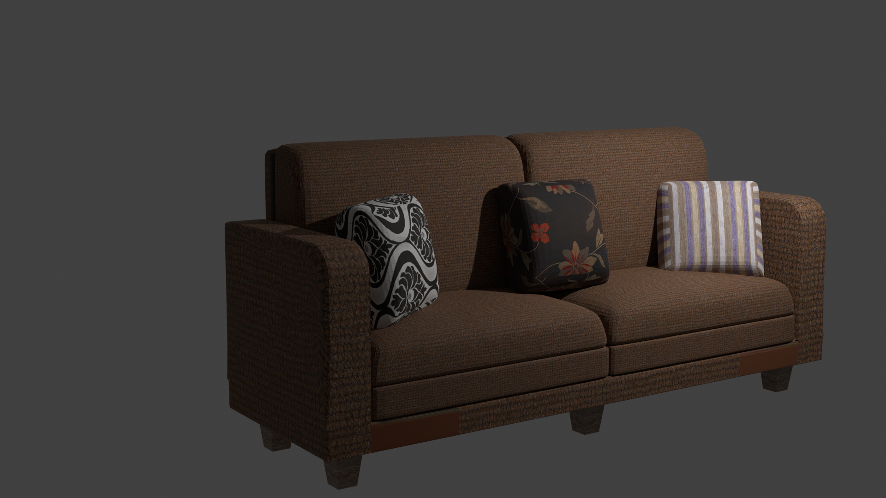

Hobbies
Creëren & verzamelen
Al sinds jong af aan heb ik de drang om dingen te maken, of uit elkaar te halen. Ik wil graag weten hoe de wereld werkt en vervolgens dat gebruiken om zelf mijn verbeelding en wensen waar te kunnen maken. Dit doe ik doormiddel van: Taalconstructie, Tekenen, 2d Design, 3d Design, Cuisine, Muziek, Games, Programmeren.
Taalconstructie
In de eerste klas van de middelbare school hadden ik en een vriendin samengewerkt aan een geheimschrift. Zij kwam toen met het schrift en vervolgens hebben we het allebij zoveel gebruikt tot het moment dat we het konden lezen zonder hulp. Het "Wombatschrift" heette het, de inspiratie ervan kan je online vinden. Dat waren onze klasgenoten gelukt, echter kwamen ze vast te zitten toen onze versie toch anders was.
Vervolgens was ik ergens in de vijfde begonnen met het maken van een Taal. Deze bevatte op het hoogtepunt 1400 woorden. Er is momenteel weer een herleving ervan omdat ik nu geïnteresseerd ben in te proberen om automatisch vanuit het Nederlands te vertalen.
Een jaar later heb ik een bijhorend en uniek geheimschrift gemaakt. Genaamd Evbe, Erg Verveeld Bij Engels, Hiermee kan ik makkelijk Nederlandse text opschrijven zonder me zorgen te hoeven maken om pottenkijkers. Het bevat meer symbolen dan dat nodig zijn voor de geheimtaal, omdat het gebruikt wordt voor zowel Nederlands, als de taal
|
Tekenen
Tekenen is heel leuk, maar ook lastig. Voor mij is het voornamelijk een moment van rust. Thee, Chocola en Tekenspullen, dat is voor mij een ideale avond om rustig bij te komen. Tekenen op papier vind ik fijner omdat ik dan geen last heb van de computerschermen. Daarnaast voelt het enigsinds definitief, wanneer je iets op papier zet. Net als met bijvoorbeeld een typemachine, zorgt het soms voor een heel ander resultaat dan wanneer ik het digitaal doe. Daarnaast is het ook makkelijk om mee te nemen, bijvoorbeeld de natuur in.
Ik ben er niet goed in, en houd meestal mijn tekeningen voor mezelf, maar dat neemt niet weg dat het weldegelijk een grote hobby van mij is. Ik zou het wel wat meer willen doen
|
2d design
Of het nou vector-images zijn, of gewone afbeeldingen. Ik vind het leuk om ermee bezig te zijn. Ik ben al heel lang bezig met gimp, watermerken van foto's afhalen of foto's samenstellen die net echt lijken vind ik erg leuk. Er is een foto van dat ik op een terras bij de eiffel toren zit, ik ben daar nog nooit geweest : ).
Tegenwoordig ben ik helemaal weg van inkscape, de trace bitmap optie had een wereld voor me geopent. Ik heb het onderandere gebruikt om logo's te digitaliseren. Voor de orginele designs kan ik geen credits nemen, maar ik voeg wel altijd verbeteringen door en denk er net even wat meer over na zodra het op het scherm komt.
Ik heb onderandere samengewerkt met het 62ste gemotoriseerde geweerregiment, dat is een geschiedenis club in de Praagse stad Prahatice. Ik heb geholpen met het digitaliseren van logo's en wat andere mediazaken.
|
3d design
Sinds 2019 ben ik bezig geweest met blender, daarvoor heb ik in 2020 twee maanden lang periodiek een kleine blend gemaakt. Door drie keer per week 1 tot 3 uur te besteden aan blender, merkte ik dat ik steeds beter werd. Je wordt sneller in de basis elementen waardoor je tijd krijgt om met extra functies te spelen. Helaas was ik erna ermee gestopt omdat het leven aan de voordeur kwam aankloppen. Maar sindskort ben ik het weer aan het oppakken. Hieronder wat voorbeelden

|
Cuisine
Koken is een grote hobbie van me. Ik moest als kind vaak voor mezelf koken en opgegeven moment begon ik het leuk te vinden. Toen ik op mezelf woonde ging het er echt hard aan toe, toen kon ik namenlijk echt zelf bepalen wat ik op tafel neerzet. Inmiddels ben ik bezig met het opschrijven en verzamelen van mijn recepten. Daarnaast kook ik ook met enige regelmaat met vrienden, koken is het leukst als er een ander van kan genieten.
Naast koken ben ik ook een echte theeleut, ik heb inmiddels meer dan 84 soorten thee. Daar heb ik een menu-kaart voor gemaakt, zodat er overzicht is en bezoek gewoon goed kan kiezen
Het thee-menu
|
|
| |

 
